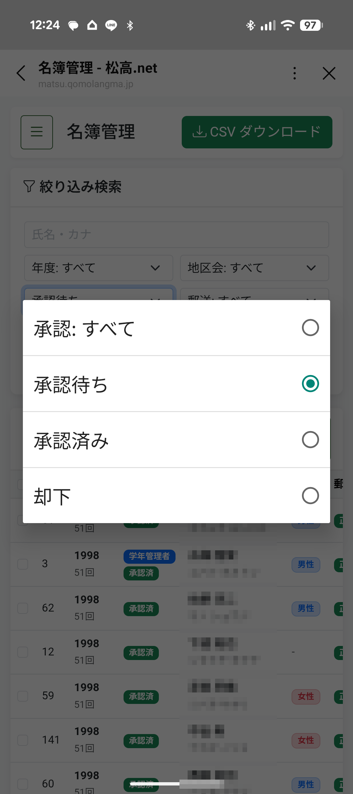
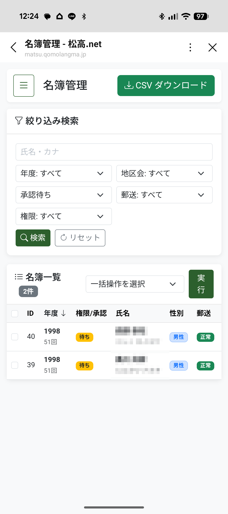
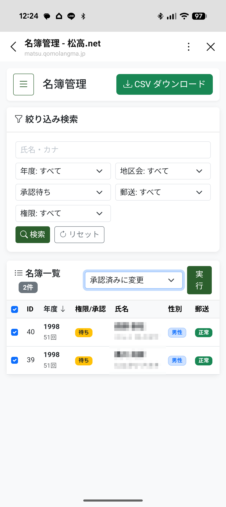
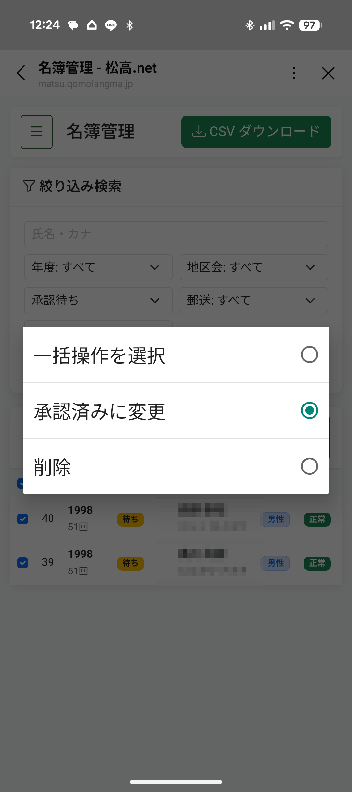
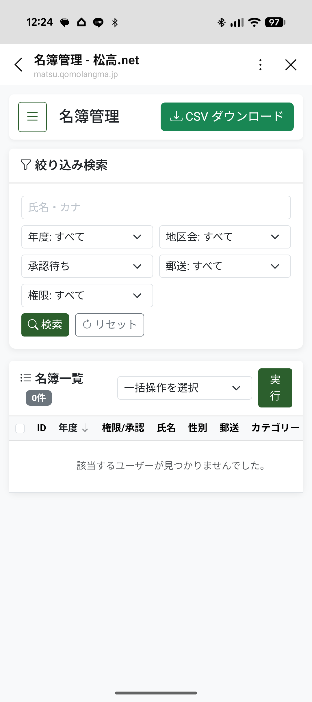
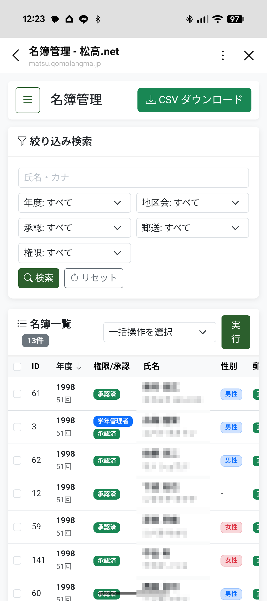

STEP 02
「承認待ち」の同級生を承認する
旧姓で登録した方や同姓同名がいる方は「承認待ち」に入ります。
画像の手順通りに進めるだけで、1分で承認が完了します。
手順 2-1
「承認待ち」を選んで【検索】を押す

名簿管理画面が開いたら、絞り込み検索枠の中にある「承認」の項目で 承認待ち をタップして選びます。
選んだら、緑色の 🔍 検索 ボタンを押してください。
手順 2-2
承認待ちの同級生一覧を確認する

現在、幹事さんの確認を待っている同級生（オレンジ色の「待ち」マークがついた方）の一覧が表示されます。
お名前や卒業年（回数）に間違いがないか確認します。
手順 2-3
承認する人にチェックを入れる

承認したい人の左側にある ☑ チェックボックス をタップしてチェックを入れます。
一番上の四角にチェックを入れると、表示されている全員を一括で選択できます。
手順 2-4
操作メニューから「承認済みに変更」を選ぶ

「一括操作を選択」と書いてある場所をタップし、メニューの中から 承認済みに変更 を選びます。
手順 2-5
【実行】ボタンを押して完了！

隣にある緑色の 実行 ボタンを押します。
再度、絞り込んだ際に画面に「該当するユーザーが見つかりませんでした」と表示されたら、承認手続きは無事に完了です！
✨ これで完了です！
承認された同級生への自動的なLINE通知はございませんので、ご了承ください。
承認された同級生への自動的なLINE通知はございませんので、ご了承ください。
STEP 03
名簿データを手元に保存する（CSV保存）

名簿管理画面の右上にある緑色の ↓ CSVダウンロード ボタンを押すと、担当学年の最新名簿をファイルとして保存できます。
🔒 安全管理のお願い：
ダウンロードしたファイルは大切な個人情報です。同窓会の案内目的以外での利用や、共有パソコンへの放置は行わないようお願いいたします。
ダウンロードしたファイルは大切な個人情報です。同窓会の案内目的以外での利用や、共有パソコンへの放置は行わないようお願いいたします。
FAQ
よくあるご質問（幹事様用）
Q.知らない人が「承認待ち」にいますが、どうすればいいですか？
旧姓や漢字の違いで自動一致しなかった同級生の可能性があります。卒対名簿やアルバム等でご確認いただき、判断がつかない場合は無理に操作せず本部事務局までご相談ください。
Q.押し間違えて別の操作をしてしまわないか不安です。
基本的な操作は「チェックを入れて」「承認済みに変更」して「実行」するだけです。万が一間違えて削除等をしてしまった場合は、本部側で復元できますのでご安心ください。